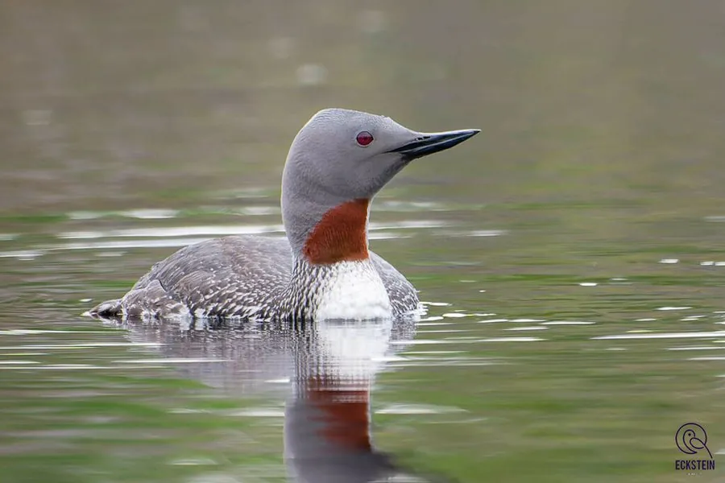

鸟类 · 动物界
红喉潜鸟 Gavia stellata

繁殖期喉部呈栗红色的小型潜鸟，善潜水捕鱼，冬季换上灰白羽色出现在中国东南沿海和湖泊，是罕见的冬候鸟。
- 分类
- 门脊索动物门纲鸟纲目潜鸟目科潜鸟科属潜鸟属
- 栖息环境
- 北极苔原的湖泊繁殖，越冬于沿海、海湾和大型湖泊
- 地理分布
- 繁殖于北极苔原，越冬于北大西洋和北太平洋沿岸，中国东南沿海有罕见记录
- 保护级别
- IUCN 无危（LC）；中国“三有”保护动物
物种志
红喉潜鸟体长 55–67 cm，体重 1–2.5 kg。繁殖期成鸟头部灰色，喉部有一块栗红色的三角形斑，颈侧有黑白纵纹，背部灰褐色并带白色斑点；非繁殖期羽色变得灰白，头顶和背部呈深灰色，脸部白色。它的喙细而尖，腿短而靠后，适合潜水。
红喉潜鸟繁殖于北极苔原的湖泊和池塘，冬季南迁到北大西洋、北太平洋的沿海和大型湖泊，中国东南沿海和长江流域有罕见越冬记录。它们擅长潜水捕鱼，能潜入水下数米深，以鱼类、甲壳类和水生昆虫为食。繁殖期在湖边地面营巢，每窝产卵 1–2 枚，孵化 24–29 天。红喉潜鸟在中国属于“三有”保护动物。
形态与习性
- 食性鱼类、甲壳类和水生昆虫
- 体长55–67 cm
- 体重1–2.5 kg
- 繁殖每窝 1–2 枚卵，孵化 24–29 天
- 潜水可潜入水下数米追逐鱼群
- 寿命野外约 15–20 年
趣味知识
- 红喉潜鸟在繁殖期喉部有一块栗红色斑，因此得名。
- 它的腿短而靠后，在陆地上行走困难，却非常擅长潜水。
- 冬季红喉潜鸟会换上灰白色的羽色，出现在中国东南沿海越冬。